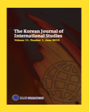
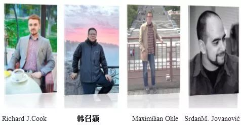

收录于合集 #理论研究 96个
作品简介
【作者】
Richard J.Cook, 南开大学周恩来政府管理学院国际关系学博士候选人，主要从事中美关系、国际关系等级制及国际安全研究。
韩召颖， 南开大学周恩来政府管理学院国际关系系教授，主要从事中美关系、中国外交政策和国际关系理论研究。
Maximilian Ohle, 在南开大学周恩来政府管理学院获得国际事务和公共政策硕士学位，并被德国蒂宾根大学政治科学系国际关系学博士生录取，主要从事中俄关系、国际关系等级制和东亚国际安全研究。
Srdan M.Jovanović， 南开大学历史学院世界史学系副教授，主要从事东欧历史与政治、巴尔干地区国家历史以及当代世界史研究。
【编译】 刘孝玉（国政学人编译员，中国海洋大学国际事务与公共管理学院）
【校对】 李雯珲、朱文菡
【审读】 丁伟航
【 排版 】 马璐
【来源】 Richard J. Cook, Zhaoying Han, Maximilian Ohle and Srđan M. Jovanović. Bridging the Theorist-Practitioner Gap in IR: What are the Risks and Benefits? The Korean Journal of International Studies , Vol.17, No.2(August 2019), pp.103-131.
期刊介绍

韩国国际问题研究期刊（KJIS）是韩国国际问题研究协会（KAIS）的官方期刊。它是一份每年三期的同行评审学术期刊，涵盖国际关系和区域研究领域的全球与地区事务以及理论辩论。KJIS致力于收录的原创文章不仅关注包括朝鲜半岛在内的东亚地区长期的问题，而且还关注在全球和区域层面上的不同观点。
弥合国际关系中理论家与实践者之间的鸿沟：风险与收益是什么？

内容提要 国际关系实践通常具有二元性，其主要探究的两个领域——一个是旨在寻求真知的科学领域，另一个是致力于探究政治行为的政治/实践领域。每一个领域都遵循着自身的一套实践和理论模式，这导致了两个领域之间的根本差别，并在过去70年的大部分时间里指导着国际关系研究者的行为规范。尽管目前这些规范仍然存在，但随着对中观和具体研究的需求日益增长，国际关系研究的专业化已经开始改变这种传统实践。在一个不确定性日益增加的世界里，对政策研究需求的攀升已经开始促使学者们进入政治和政治行动领域。 这一变化如何影响身份以及人们之间的互动？对弥合理论家与实践者之间的鸿沟产生什么样的影响？对国际关系教育又有何启示？ 文章在解决上述问题的同时，认为科学领域与政治/实践领域间的鸿沟应该弥合，但须谨慎处理。
文章导读
一、引言
二十五年来，传统国际关系研究领域出现了明显的日益扩大的鸿沟，即理论家与实践者之间的二元化。 保持与理论（eidos）和实践（praxis）有关的实用主义研究地位的问题，而非与之相反的综合性研究问题，一再提出了“弥合鸿沟”(bridging the gap)或“消除鸿沟”(eliminating the gap)的难题。 “鸿沟”的存在直接指出了一个重要的问题，即传统上划分两个领域的各自专业方法之间的界限模糊不清。 为了抓住文章讨论的主题，作者回顾了马克斯·韦伯对“科学与政治”的区分。韦伯指出了实证研究和规范研究的显著区别： 一个是客观的、基于事实的，另一个是主观的、基于价值的 。前者被强调为“那些寻求真知的研究”，而后者被公认为是“那些寻求政治行动的研究”。上述界定是文章研究的基础。鸿沟的存在表明两个研究领域出于各自的目的，在生产和传播知识时存在潜在的滥用或问题。
因此，文章提出的问题可以总结如下：
1） 研究者如何在研究领域中定位自己，并定义他们在二元领域中的相互作用？
2） 他们如何处理这一鸿沟？
3） 国际关系教育面临着哪些风险？
由于不断增长的政策需求，弥合理论与实践之间的鸿沟变得越来越普遍，这些问题给从事国际关系学术研究的理论家和政治实践者提供了身份、研究规范和教育方法等方面的重要思考。从本质上说，一些正在形成中的 “跨领域主义”（trans-domainism）研究模式对传统的研究框架构成威胁的同时，也为政策实践者提供了帮助。
二、文献综述
国际政治中发生的重大变化推动了国际关系研究的重新调整。 权力分散观念的广泛传播也强化了这种变化。随着西方主导的国际秩序面临越来越多的挑战，一些学者的研究已经开始转向体系变革，这暗含着一个以和平或冲突的方式进行的权力转移过程。虽然这一过程只是初步显露，但 随着国际政治环境波动的加剧，需要更加积极的政策予以应对，人们已经可以观察到各种观念正在塑造着国际体系的变革。
上述这些因素正在给行动体造成广泛的不确定性，为了从非常具体的立场评估某些变化，人们需要进行中观和微观的研究，而不是广泛的理论和宏观的研究。但是，学者们仍然执着于对政治家来说往往不切实际的宏大理论 。 这就引起了政策实践者的不满，因为他们更倾向于采取明确的措施和行动 。 因此，人们可以看到由于理论对政策实践几乎没有什么作用，所以政策实践者对理论的重视程度很低。 所以，核心挑战就是如何提高研究质量以更好地服务于政策需要。
这一挑战存在一种补救方法，即在传统 国际关系研究 的 二元 化 ——“科学”与“政治”——上进行重要的专门化 。 帕特里克·杰克逊（Patrick Thaddeus Jackson）将国际关系划分为追求真知的科学和追求行动的政治; 科学又被进一步细分为学者和专家，政治也被细分为政策知识分子和政策实践者 。 上述这种划分借鉴了约瑟夫•莱普戈尔德(Joseph Lepgold)的研究。莱普戈尔德将国际关系活动划分为“理论建构”（Theory building）和“政策应用”(Policy applications)两个主要领域，每个领域又细分为具有特定重点和目标的群组。“理论构建”则被细分为群组1“一般理论”(general theory)和群组2“以问题为导向的困惑”(issue orientated puzzles)，同样“政策应用”又细分为群组3“案例导向的预期”(case-orientated expectations)和组群4“政策制定”（policy making）。此外，莱普戈尔德还指出，从第一群组到第四群组，存在着一种从低到高逐渐接近具体政策的的层级，“一般理论”最低，“政策制定”最高。
**然而，上述研究又提出了这样一个问题，即两个领域在仍然承担其 “寻求真知”和“寻求政治行动”的责任的同时是否可以“弥合鸿沟”。**虽然大多数人认为鸿沟需要弥合而不是被消除，但人们弥合鸿沟的同时也冒着模糊“责任”和“专业化”界线的风险，甚至可以说是出于政治目的而将科学方法与学者脱钩。随着越来越多的国际关系实践者接触到了目标不同的领域和子领域，这就不可避免地导致相关领域的二分法问题，以及一个更紧迫的问题：我们如何在这一领域内认识自己？
文章指出，帕特里克·杰克逊的研究发现了关于模糊界限问题的一个重要原因，即跨越鸿沟需要国际关系实践者将自己转移到一套排他性的责任上，基于此审慎至关重要。为了进一步促进在该领域内建立一种新身份，也有人呼吁进行更广泛的活动并寻求位于上述领域边界之间的群体。这意味着在科学和政治两个独立领域之间可能存在着一种“跨领域主义”，其可以在这两个领域之间协调运作。
三、 “分工”——“科学”与“政治”的二元对立 ****
长期以来，国际关系被划分为一系列学派，大多数学者会根据各自的研究传统将这些学派结合起来。这些范式通常分为现实主义、自由主义、马克思主义和建构主义。与此相反，国际关系中还有另一种传统的分工，这一分工将人们定义为国际关系的科学或政治领域中的成员。如图1所示，每个领域被进一步划分成两个子领域。科学领域由学者和专家两个分支组成，政治领域被细分为政策知识分子和政策实践者两个分支：
每一个特定领域都包含一个特定的目标，这些特定的目标首先被分配到科学和政治领域，这与人们对探究模式的理解有关。科学领域可以“增强人们对事物的实际把握”，而政治领域则能帮助人们“把事情做好”。这标志着国际关系学术方法论意图的脱离，然而也为人们提供了具体的方法论观点。因此，利用韦伯的逻辑和区分规范，我们可以从图1中看出，“学者”、“专家”、“政策知识分子”和“政策实践者”的分类有助于确定从事国际关系研究人员的身份标准。
四、情景化子域：专业分类和理论输出需求
在国际关系研究中， “学者”关注五个方面的内容： 困惑、概念化、描述、 做出因果推论 和教育学 。 这个子领域主要由国际关系学科内的教师（讲师和教授）组成，他们都是教育机构的成员。在那里，他们可以自主地进行研究，可以说是独立的、以自我为中心的。 “专家”是那些为了提供解决问题的建议而研究难题的人， 例如，智库研究人员和项目协调员。因此，这些专家主要研究具体的问题，并为特定任务将问题收缩或细化。 “政策知识分子”指那些更多针对政治行动的人。 他们的任务是提供高端的政策建议，并且服务于特定的政治利益，而不是为追求科学事实服务。 “政策实践者”则是政府部门中的成员。 例如，这个职位包括英国议会、美国国会和参议院的议员等。他们负责管理国家，并寻求政治行动最佳方案，以服务于他们认为最符合国家和他们自身利益的事情。
这些分组以各种方式联系在一起； 这种二分法的传统规范不仅 能够很快地 概括 出每个领域的特定功能， 而且还 可以 概括 出 它们与各个不同子域之间的 特殊 关系 。 这些关系构成了国际关系知识体系的基础，并为其提供了目的 。 基于此，可以看出，在当今世界，科学各子领域不仅与政治各子领域有深入的关系，而且各研究人员在两个领域的子域中也具有特定价值。例如，广义的理论、中观和具体的理论研究/困惑各自都代表着一种不同的具体知识，并进一步满足了科学与政治各子领域的需求。
学者与子领域的关系
由于政策实践者的需求导致了研究动机的不同，可以对国际关系知识做进一步分级。本文将国际关系知识设想为三个层次：广义理论/困惑、中观理论/困惑与具体理论/困惑。
如图2所示，我们可以看到三个理论/困惑层次的运用，以及子领域与“学者”的知识关系。 就广义的理论 /知识 来说 ， 它在专家那里发挥了作用 ，但 在 政治领域 则不尽然 。 在广义的理论 /困惑不起作用的地方，中观的理论/困惑便可以弥补它。对于政治实践者来说，具体的层次理论或建议可以直接适用于他们的需求，同时还可以满足其他子领域的需求。
专家与子领域的关系
将这三个理论/困惑层次应用于专家子域，可以发现针对不同子域的不同知识划分。 **由于学者们可以独立追求真知，他们可以利用专家子领域的各层次理论 /困惑。**专家很少涉及广义理论/困惑知识，因为他们通常针对某个具体的问题提供一个具体的理论/困惑。但是专家可以通过参与大量的学术活动来接触广义理论/困惑。 专家们创造的中观理论 /困惑知识，对政策知识分子有用，并且具体理论/困惑知识则对政策实践者有用。
政治领域与科学子领域的关系
把视角转到政治领域，可以看到一种相反的模式，政治领域有对适当知识的特殊需求。 这种需求受到两方面的影响。
首先，国际关系 需求 受到国际事件的驱动 。 一个活跃在国际舞台上的行为体,需要一个重要且成熟的国际关系知识系统。同时他又需要一个高度发达的“科学”领域,这反过来会产生一系列的知识并反馈到“政治”领域。
其次，需求指向理性的且时代感强的当代研究和知识 。然而，如前所述，学者们的研究补充了对中观和具体理论/困惑的需求，包括需要一些广义理论/困惑来为其他形式的研究奠定基础。这就需要在每个专门化之间保持平衡。足够多的广义理论/困惑可以补充中级和具体的理论/困惑，而一系列的中观和具体理论/困惑则可以满足“政治”的需要。
五、对“分工”的影响
正是这些对国际关系二分法的理解提供了一个实用且理性的认同，同时每个域和子域为其余域或子域提供了一个特定的关注点。这些需求为相互之间传递不同的研究知识奠定了基础，同时每个领域都保持着一项基本功能。这代表了在国际关系知识系统中研究、组织、分配、合法化和运用的过程。尽管这些要求的标准在变化，但事实上它们与行为体在国际社会中的地位、参与度和行为有关。对于那些频繁参与国际事务的国家来说，要求必须得到满足。 当知识不能作为发展的补充，或者当为 国际关系成员提供新的从属关系时， 不仅 研究知识可以 “ 弥补 鸿沟 ” ，而且国际关系实践者本身也可以 弥补它 。 这让人们可以看到需求和国际关系实践者的从属关系如何影响着这些模糊的界线。
根据以上的结构化分组，文章指出，人们可以设想某些学者属于某个特定领域。然而，一个学者并非仅是或非得是某个领域的成员；为了完成特定的任务，他们能够并且经常从一个领域跨到另一个领域。不管这些任务是“声称为了增强人们对事物的实际把握”还是“声称能把事情做得更好”，都应该认真对待，不容混淆。因此，学术上的审慎是至关重要的，这将人们引向另一种辩论——“困惑”。每个领域，无论是学者、专家、政策知识分子还是政策实践者，最终都专注于各自特定的困惑。所有这些困惑都是国际关系的困惑；只是他们的目标各不相同，或是为了增强我们对政治世界的实际把握，或是为了把事情做好。为了保持清晰和专注，这些困惑需要彼此保持独立。尽管如此，一个领域的研究可能会超越其他领域，以便在其他研究的基础上，或影响其他研究的目标。
与寻求真知和寻求政治行动相关的国际关系研究人员，要么是面向科学领域，要么是面向政治领域，而那些从事补充中观或具体理论需求的研究人员则是根据他们的传统职责走了一条很好的路线。 然而，将他们和他们的工作拉向 鸿沟 的不仅仅是需求。从属关系 这一 因素也值得关注 。对于初出茅庐的国际关系研究人员来说，从属因素可能更为重要。当他们进入一个具有众多要求并且和同辈竞争十分激烈的领域时，为谋求名声寻找一个“宏大理论”的捷径极具挑战性。这种在整个国际关系教学中日益有害的传播，是在一个错误的假设中进行的，即赢得“奖券”，可以在政府中占据一席之地。将这一“宏大理论”推向政治舞台，特别是推向政策实践者的想法，进一步点燃了人们成为下一个伟大政治家的梦想。正如在国际关系中被普遍接受的那样，“奖券”的要求是将普遍的宏大理论概念化。然而，即使对最著名的学者来说，实现这种理论成果的可能性也是不大的。克服这一点或多或少是个人成熟的问题。
这个问题难以控制的事实是，这些模糊的界线是需求、关系和成熟的产物。人们在“科学”和“政治”领域之间努力选择一个相互排斥领域，做出这种选择的本质以及驾驭这些努力的能力，是人们从事学术研究时学术行为的基础。
六、 对国际关系教育的影响
在国际关系教育学中，弥合鸿沟或跨越鸿沟给人们带来了一个源于社会结构和思想的深奥困境，这种困境根源于国际关系知识如何通过国际关系知识库进行循环。文章指出赖利·菲利普（Riley Philip）对语言、文化和身份的研究，虽然不是完全基于国际关系知识的细节，但其中蕴含了深刻的见解，使人们能够就弥合“科学”和“政治”领域之间鸿沟的风险以及对国际关系教育学的潜在风险展开进一步的辩论。
对于国际关系教育的未来以及跨越已知“鸿沟”所面临的困境，还存在着另外三种认识论途径，即将国际关系教育学分为:1)“认识论断裂”（an epistemological rupture）；2)认识论混乱(epistemological anarchy)；或3)公理发展认识论(an axiomatic development epistemology)。因此，“师”与“徒”之间的知识要素以及“师”与“徒”的身份在各自领域的转换，在国际关系教育学中起着至关重要的作用。
如果把国际关系看作一个内在的知识系统，那么就能以所述域的结构和功能为中心范围。因此，根据赖利·菲利普的研究视角，知识被转录和建构成这样：
关于上述的“创造和生产”，国际关系是通过运用理论，寻找问题、困惑和答案的科学视角，并通过实践来生产知识的，这为任何特定的研究提供了经验价值。这一知识被分为“域”和“子域”,体现了“有组织”的方面。它在适当的机构(大学、智库等)中储存,并分发供认知共同体成员使用,目的是创造和生产知识。这种知识的合法性是通过其在认知共同体及其利益中使用而形成的。认知共同体的使用激发了国际关系领域内的话语、研究项目和辩论，因为该领域的个人关注特定的困境。这种模式被认为是国际关系研究习惯的标准规范，是该领域内现存的一个共同观念。
由于“科学”和“政治”目标的不同，弥合鸿沟就需要从根本上改变习惯和信条。通过主体间耦合和整体话语，获取知识的社会学习过程，根植于不同的设计和目标。对于跨越鸿沟的人来说，知识的获得和实践被扩展到相反的领域。这反过来又影响特定的认知范畴，因此，知识的使用和对立领域的标准可能被看作是对主体的妥协。随着既定的习惯和观念的瓦解，研究者原有领域及其实践的记忆也会受到损害。在这种情况下，他们的社会身份，即他们由于对立的领域利益和要求而扮演的角色，被改变了，也因此改变了他们的理念或世界观——一系列的思想、信仰和价值观——关于他们国际关系知识的运用和目的。因此，个人的实践变得更加广泛，这损害了他们各自的领域和使用国际关系知识的实践。
作为1）结构、2）展望、3）运用的知识循环，为实现不同的目标，从根本上采取不同的方法、设计和目的。跨越鸿沟进入对立领域的个人，通过国际关系社会知识系统，建立基于知识循环的知识库，如上所述，可以批判性地将个人暴露给可能对国际关系教育方法产生重大影响的不同理念和实践上。从这个意义上讲，从事教育实践的个人（大师）跨越鸿沟后，可能使用一种会导致重大风险的理念教育学生（学生）。这种败坏的理念可能会转移到学生身上，导致他们对实践产生模糊的理解，即学生使用不正确的研究习惯来研究国际关系。
当代的 国际关系话语带来了众多的科学家和实践者，跨越了各个领域之间的 鸿沟 ，从而成为一个特定的 理念 如何在下一代学生中留下印记并在认知 共同体 中表现出来的例子。 他们可以被分为不同的群体，以进一步语境化:科学研究者成为政治实践者，并有可能重返学术界；政治实践者成为科学研究者，然后再一次转向他们最初的实践，同时从事政治实践的科学研究者。接下来，作者谈到了几个跨越了科学探究与实践之间鸿沟的个案以证实这些群体的存在。
（ 1）在成为政治 实践 者的学者中，亨利 ·基辛格是 其中一个 最 为 知名的例子。 在哈佛大学的科学生涯中，他发展了自己的现实政治概念，其存在是基于对美国理想的保护，并彰显了他自己的个人经历和作为来自纳粹德国的一个犹太移民的反思。这为他变成一名政治实践者，特别是在尼克松和福特两任总统期间担任国家安全顾问（1968-1973）和国务卿（1973-1977）奠定了基础，从而促成了新保守派的理想主义在美国政治中的崛起。回归学术之后，他进一步致力于美国例外论的语境化，这体现在他在乔治城大学的教学活动，并在其后期作品《大外交》，《论中国》和《世界秩序》等作品中得到了极大的体现。
(2)政治生涯结束后，各类 实践者 纷纷转向学术界，将自己的经验融入到与国际关系 学术 工作相关的分析框架中。 从德国政治决策层退出、转而从事教学活动的西格马尔·加布里尔(Sigmar Gabriel)是最新例子之一。在此之前，他曾担任下萨克森州州长(1999-2003)、环境、自然保护和核安全部长(2005-2009)、经济和能源部长(2013-2017)以及外交部长(2017-2018)。与此同时，他还在2009至2017年间领导着德国社会民主党(SPD)。后来，加布里尔被聘为波恩大学和哈佛大学的客座讲师，讲授外交政策分析课程。在此期间，他还利用这个机会推销自己的个人的观点,他一直在指导他的学生形成一种观点，即欧盟如何能够就叙利亚内战以及同美国、俄罗斯、中国和土耳其等国的关系等问题制定一个连贯的政策。虽然他声称自己也想从学生的角度学习，但他的指导基本上符合SPD的原则和德国的国家利益——这种影响源于他作为政治实践者时体现出的政治理念。
(3) 米夏埃尔 ·施蒂默尔（ Michael Stürmer ）致力于学术和政治实践，曾在埃尔朗根 - 纽伦堡 大学 (1973-2003)教授历史 ， 被公认为德国最杰出的科学家之一。 他以其右翼保守主义历史观而广为人知。他谴责左翼政治力量（主要是社会民主党）,并担心丧失历史记忆和自豪感会成为德国在世界政治中承担责任，特别是对盟友的承诺的一个不稳定因素。同时，施蒂默尔在科尔总理麾下担任过顾问(1980年至1986年)。科尔的政策基于施蒂默尔对历史和政治的诠释，符合传统主义精英群体深奥的话语，因此被深深地烙下了保守派的印记。这些观点也反映在施蒂默尔在埃尔朗根- 纽伦堡大学的演讲中，从而揭示了他的学术工作和在科尔总理领导下的政治实践之间错综复杂的相互作用。 约瑟夫 · 奈也致力于学术 研究 ，同时 投身于 政治实践。 1964年在哈佛大学获得博士学位以后,奈一直从事教学和科研事业,他和罗伯特·基欧汉共同提出的复合相互依存理论以及软实力概念。与此同时，他的学术承诺被他的政治咨询活动所补充，这促进了上述理论概念的发展和教学能力的提升。奈的例子，揭示了科学和政治领域之间的相互作用，这种作用有助于他在这两个领域体现其个人理念。
该如何帮助弥合其中的鸿沟呢？赖利·菲利普通过建立主体间性——像任何教学活动一样在双向互动中共享意义的一种状态——与他人进行有意义的社交接触将会触发“人类认识他者的本能”。特雷瓦尔藤（Trevarthen）将主体间性定义为“在多元化的主体中对经验内容的分享(如情感、观念、思想和语言意义)”。在文章的案例中,多元化的主体被缩减为师与徒的二元结构,在这一结构中，主体间性可以通过共享上述的个人经验,如个人观点/看法、想法,甚至情感来实现。
从科学的角度出发，文章认为强调共享智力模式(思想，观点等)可能并没有什么意义，因为它是不言而喻的。然而，对于一些实践者来说，情感分享可能太多，因此我们需要进一步强调它。对弥合鸿沟的恐惧(这是一种情绪本身)，加上对对立面潜在的不信任，很可能导致人们弥合鸿沟的尝试失败。这会使主体感到恐惧、怀疑、不信任，或者会对弥合鸿沟感到彻底的厌恶。主体间性本身就需要进行重要的研究。然而，问题也随之而来；根据主体间性理论，主体间性是与生俱来的，可以随着年龄的增长而“迷失”。但是，它可以在成人体内恢复。换句话说，有了耐心和对主体间性的积极看法，赖利·菲利普的“域间耦合”可以说很容易实现。
七、结 论
回顾 国际关系的发展，至少有两个重要时刻影响了人们在学术界的参与方式。第一个关键时刻是爱德华·H·卡尔“将两次世界大战之间的自由国际主义批判为‘乌托邦思想’，并呼吁将国际关系这门科学带出萌芽阶段”，这造成了实证研究与规范研究阵营之间开始决裂。第二个重要时刻则发生在20世纪50、60年代，它“敦促将科学严谨性融入社会科学”。最近，国际关系实践的各个方面又开始通过反思重新浮出水面，并重新提出了问题“作为国际关系学者，我们应该为此做些什么?”
这最终给人们留下了三个可以论证的标准问题，而这些问题可能会让人们对未来重新产生兴趣，也就是本文所讨论的主题，比如国际关系的目标是什么；国际关系学术研究中价值观应扮演什么角色以及国际关系实践者的责任是什么。当肯·布思（Ken Booth）和托尼·厄斯金（Toni Erskine）评估这些挑战时，他们倾向于考虑这几个因素:A)专业化或科学化国际关系；B)承诺变革；C)将科学探究作为工具；D)解决问题的方法；E)战略眼光；F)理论宽容；G)具有有限价值取向的经验命题。这些考虑构成了杰克逊、奈和詹特森（Jentleson）等反思者的基础。至于下一个国际关系的另一个重要时刻，可以想象，进一步“弥合鸿沟”的活动将导致更多关于学术伦理和惯例的讨论。
文章指出， 至少在一段时间内， 只有在 国际关系进一步发展 到 与不断变化的当代全球环境相适应 时 ， 才能找到一种能够 平息与特定的两分法、特定的目标和责任相关联的国际关系 实践 者的某些矛盾 方法 。 试图消除这种不平衡显然是徒劳的，因为人们急切地、而且越来越多的实践做法，如跨越这种鸿沟，最终将成为一种规范。然而，通过调整杰克逊等人所强调的重要做法，不仅可以显示国际关系发展的本质，而且也能促使其更适用于跨领域的一系列职责。
至于风险，文章指出，由于科学和政治领域之间的鸿沟很小，谨慎是至关重要的。 无论如何，学者们都不应该被阻止去弥合这一鸿沟；然而，人们必须警惕和牢记以下这些方面：“国际关系理论家可以在不牺牲我们的完整性和客观性的情况下为决策者提供有价值的想法，但前提是我们决定我们想要这样做”。在保持谨慎的同时，应该进一步瞄向一个额外的、具有超越鸿沟的独特特性领域，这在本质上是对一个跨域的识别。这可能需要一群能够洞悉三种理论/困惑形式并更好地弥合鸿沟的思想家。随着跨学科话语和跨领域主义的兴起，对国际关系知识体系的内容做进一步分层至关重要。当发现到一个新的跨领域，将之假设为“政策思想者”，那么国际关系知识系统的组织结构将会因此受益。这将指向那些能够跨越鸿沟的专业人士，让其保留和应用相互排斥的实践而不损害自身，并能将其从围绕国际关系知识体系、国际关系实践和来自所有领域以及所有理论层次的国际关系需求的难题中解放出来。从某种意义上说，他们体现了多元科学的本质。
_ ** _ ** _ ** _ 本文由国政学人独家编译推荐**__
扫下方二维码查看往期精彩
【新刊速递】第01期 | Review of International Studies Vol.45, No.4, 2019
【新刊速递】第02期 | International Relations Vol.33, No.3, 2019
【新刊速递】第03期 | International Organization Vol.73, No.3, 2019
【新刊速递】第04期 | World Politics, Vol.71, No.4, 2019
【重磅译介】米尔斯海默《大妄想》:（反驳）自由主义的和平理论丨国政学人
分类导览 1
分类导览 2
点“在看”给我一朵小黄花